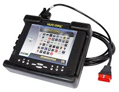

Auto servis
SIT&DRIVE

Auto servis
SIT&DRIVE
Naprednom tehnologijom povećana je bezbednost,stabilnost i komfor pri vožnji automobile,zahvaljujući elektronskim sistemima kao što su sistemi za ubrizgavanje i paljenje motora,za kočioni sistem ABS, za vazdušne jastuke AiRBAG(SRS), itd… Savremenim uređajem za dijagnostiku lako i brzo detektujemo i otklanjamo greške nastale u slozenim kompjuterskim sistemima i elektroinstalacijama.
